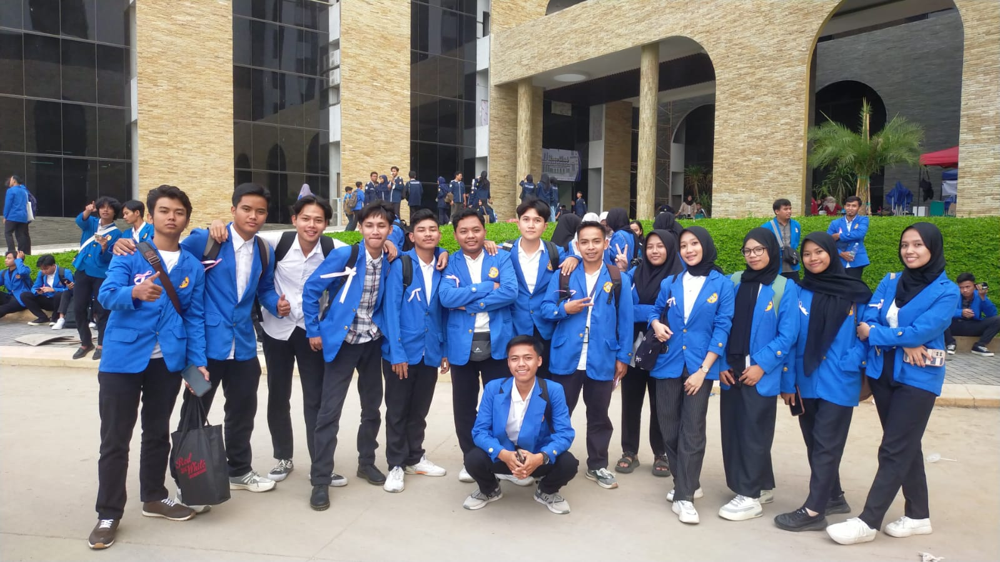
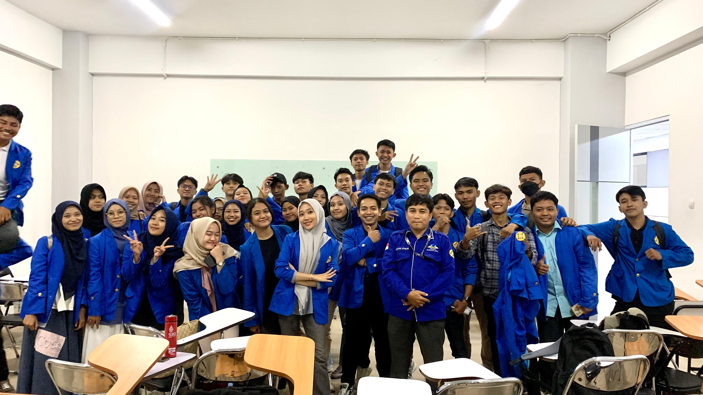

Pelatihan Literasi Digital & Verifikasi Sumber Informasi
Sesi interaktif mahasiswa Program Studi Sistem Informasi dalam mengevaluasi keabsahan data, keamanan siber, serta etika penelusuran pustaka digital di lab komputer perpustakaan.
Koleksi foto dan video rekaman kegiatan pelatihan literasi digital, workshop sitasi ilmiah, serta bimbingan akademik di perpustakaan.

Sesi interaktif mahasiswa Program Studi Sistem Informasi dalam mengevaluasi keabsahan data, keamanan siber, serta etika penelusuran pustaka digital di lab komputer perpustakaan.

Praktik langsung penyusunan daftar pustaka standar APA dan IEEE bersama pustakawan dan instruktur untuk persiapan penulisan proposal tugas akhir dan skripsi mahasiswa.
Video dokumentasi rangkuman pelaksanaan pelatihan karier dan literasi ilmiah mahasiswa Universitas Pamulang Kampus Serang. Menampilkan antusiasme mahasiswa, tutorial penelusuran repositori kampus, serta panduan praktis dari narasumber perpustakaan.